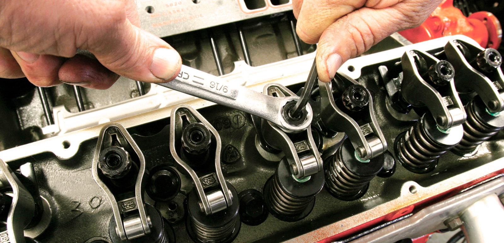
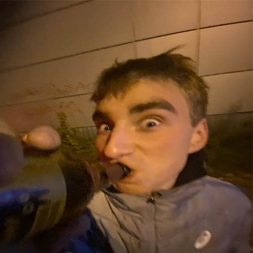
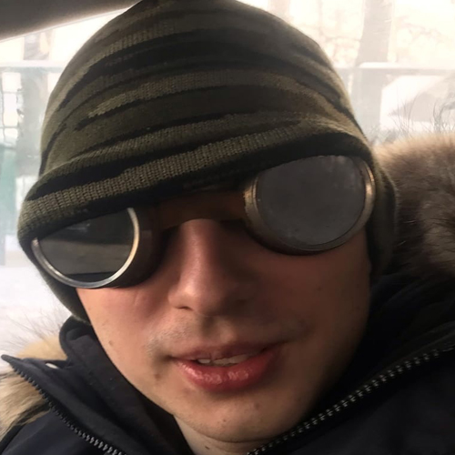

Мы очень давно в этом деле и знаем что к чему
у нас работают только квалифицированные специалисты
самые доступные цены только у нас,но мы понимаем ,что наши клиенты нас любят не из-за цен,
а за качественно выполненую работу.🔥
Диагностика, ремонт и техническое обслуживание автомобиля
Запасные Части, Ремонт И Техническое Обслуживание Автомобилей
Автомастерская “У Димдимыча” специализируется на техническом обслуживании, ремонте и продаже запасных частей к автомобилям ведущих мировых производителей. Мы рады предложить вашему вниманию широкий спектр технических услуг.
ПРОДАЖА ЗАПЧАСТЕЙ НОВЫХ И б/у
ТЕХНИЧЕСКОЕ ОБСЛУЖИВАНИЕ
СЛЕСАРНЫЙ РЕМОНТ
РЕМОНТ ДВИГАТЕЛЕЙ , КПП, АКПП
ШИНОМОНТАЖ
КУЗОВНОЙ РЕМОНТ

Наши Фиксики


Наши приемущества
Наш подход к ремонту автомобиля прост - каждую машину мы делаем " как для себя". Некоторые из вас уже положительно оценили нашу работу - поэтому качество и оперативность при низкой цене наш главный принцип.
Особое внимание наша автомастерская уделяется повышению качества услуг. В условиях жесткой конкуренции на рынке автосервиса этот важнейший фактор позволяет нам сохранить и расширить круг наших клиентов, гарантируя им стабильно высокое качество услуг при минимально низкой цене. Каждый этап работ тщательно контролируется нашими специалистами! Всё это позволяет нам производить ремонт и техническое обслуживание автомобилей в максимально короткие сроки и по доступным потребителям, ценам.